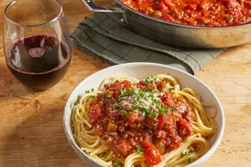

Spaghetti

Spaghetti is a simple in a concept dish. It does take a while to prepare it, however once you do the the hard part
all it takes is just mixing, patience and literal cooking to enjoy this rich taste of pasta with tomato, with soft
feel of the meat.
Ingredients
- ½ kilogram ground beef
- 1 medium onion, chopped
- 4 cloves garlic, minced
- 1 small green bell pepper, diced
- 1 can diced tomatoes
- 1 can tomato sauce
- 1 can tomato paste
- 2 teaspoons dried oregano
- 2 teaspoons dried basil
- 1 teaspoon salt
- ½ teaspoon ground black pepper
Steps
- Gather all ingredients
- Combine ground beef, onion, garlic and green pepper in a large saucepan over medium-high heat. Cook and stir until
meat is browned and crumbly and vegetables are tender, 5 to 7 minutes. Drain grease.
- Stir diced tomatoes, tomato sauce and tomate paste into the pan. Season with oregano, basil, salt, and pepper.
Simmer spaghetti sauce for 1 hour, stirring occasionally.
- Serve hot and enjoy!